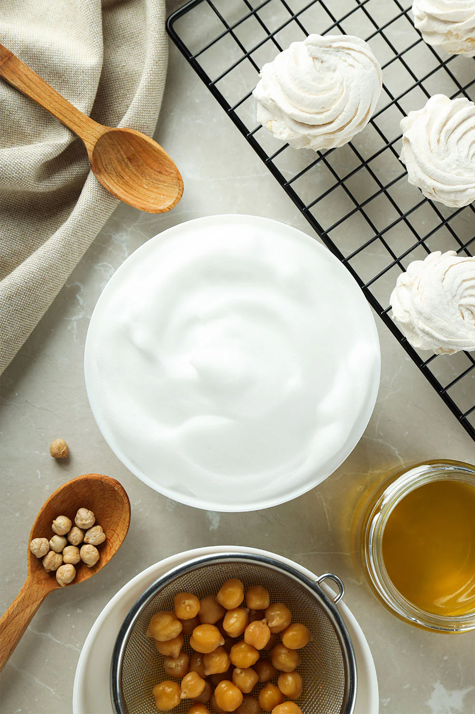
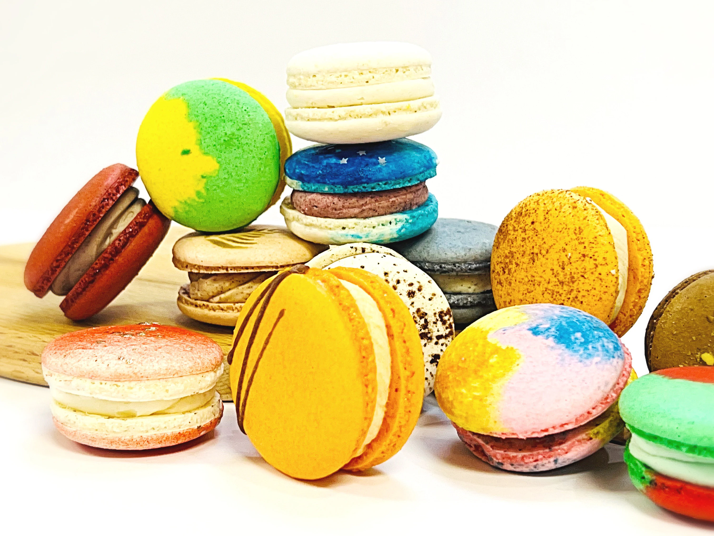

¿Por qué la Repostería Vegana es el Nicho de Oro para Emprender?
El cliente vegano, intolerante o consciente de su salud es un cliente fiel, exigente y dispuesto a pagar más por la calidad y la seguridad. Sustituir el huevo, la mantequilla y la gelatina sin perder sabor o textura es el mayor desafío que solo una formación profesional puede resolver. La repostería vegana no es una simple 'receta', es una ciencia de la sustitución que requiere el conocimiento profundo que adquirirás en el curso.

Sustituto del Huevo: El Desafío de la Estructura y el Esponjado
1. La Magia de la Aquafaba (Merengues Veganos)
¿Cómo hacer merengue vegano?
La Aquafaba es el sustituto estrella de la clara. Se puede montar para crear merengues, macarons y mousses ligeros, pero solo un buen método enseñado garantiza la estabilidad y el tiempo de batido perfectos.
2. Semillas de Lino y Chía (Aglutinantes)
¿Qué usar en lugar de huevo para que pegue la masa?
Las semillas de lino o chía crean un gel que imita las propiedades aglutinantes. Son ideales para muffins y bizcochos. Aprende las proporciones exactas para que tus masas nunca fallen.
Sustitutos de Lácteos y Grasas: Sabor, Cremocidad y Textura
1. Mantequillas Veganas y Aceites
¿La mantequilla vegana es buena para hornear?
La mantequilla vegana de alta calidad es esencial para la textura hojaldrada. En el curso podrás aprender qué marcas y tipos de aceites usar para garantizar la humedad perfecta en todos tus pasteles.
2. Agar-Agar y Pectina (El Secreto del Gelificado)
¿Cómo sustituir la gelatina en mousses y glaseados?
El Agar-Agar es el sustituto de la gelatina, crucial para mousses y panna cottas. Su punto de gelificación es diferente. Dominar el punto de ebullición es crítico, y es una técnica que solo el curso te enseñará con precisión profesional.
Aprende el Punto Exacto de Gelificación del Agar-Agar en el Curso⚠️ Solución Definitiva a tus Problemas Veganos Más Frecuentes
1. Bizcocho Vegano Seco o Denso
¿Por qué mis pasteles veganos quedan secos?
La clave es el equilibrio exacto entre leudante ácido y grasa líquida. Deja de adivinar: el curso te da las proporciones científicas que garantizan la humedad y esponjosidad en cada receta.
2. Macarons Veganos que No Suben
Receta infalible de macarons veganos con aquafaba.
Esta es la receta más difícil. El proceso de secado (croutage) y la concentración de la aquafaba deben ser perfectos. Sólo la metodología probada y la precisión de nuestro curso avanzado te garantizan el éxito.
✨ ¡Deja de Experimentar y Empieza a Crear Recetas de Lujo Veganas con Éxito Garantizado!
La frustración de fallar es costosa y desmotivadora. Accede a las recetas ya probadas y a la ciencia de la sustitución para tener éxito garantizado desde el primer día, sin fallos ni pérdidas de ingredientes.
✅ Quiero las Recetas Veganas Infalibles (Acceso Inmediato)La pastelería vegana es el futuro. ¡Adelántate al mercado con la mejor formación!
¿Quieres Seguir Explorando?
Encuentra más guías profesionales y tu camino a la certificación con estos artículos relacionados.
➡️ ¿Cuál es la mejor batidora de pie profesional? ➡️ Impresoras comestibles ➡️ Lunch Box📖 Más Guías Esenciales y Recetas
Descubre el resto de nuestros artículos de SEO sobre tendencias, equipamiento y técnicas avanzadas de repostería.
➡️ Ver todos los Artículos🎓 Catálogo de Cursos PRO: Repostería, Pastelería Fina, Diseño 3D y Cocina de Alta Especialización.
Explora la comparativa detallada de todos los programas disponibles: Repostería Vegana, Chocolatería, Pastelería Canina y más.
📚 Ver Todos los Cursos